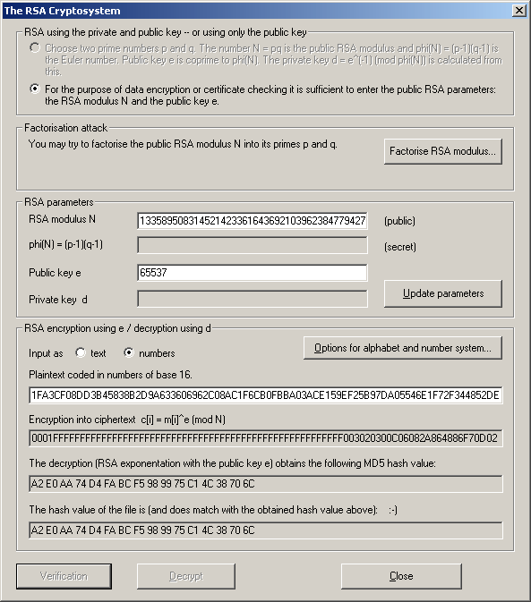

You can verify a digital RSA signature using the signers public RSA parameter.
Before you can verify a received signature, you must get the public key of the sender.
The signature to verify is a number strictly less than the modulus N. You may enter the signature as a sequence of two hexadecimal digits separated by blanks or as number of the selected base.
After the click on the button Decrypt (if you get to this dialog via the menu Digital Signatures \ Verify Signature the button Verify will be shown instead) the exponentiation with the public key e RSA is be computed.
The result of the RSA exponentiation is a hash value which has to be compared with the hash value computed from the document. If both hash values are identical this is considered as a proof that the owner of the corresponding private RSA key has signed the document.
If you use the menu Digital Signatures \ Verify Signature to verify a RSA signature, you can select the check box Display intermediate results. Clicking on the button Verify will result into the following output:

If the result of the RSA exponentiation and the hash of the document match, then the signature is approved as valid and a smiley :-) is displayed.